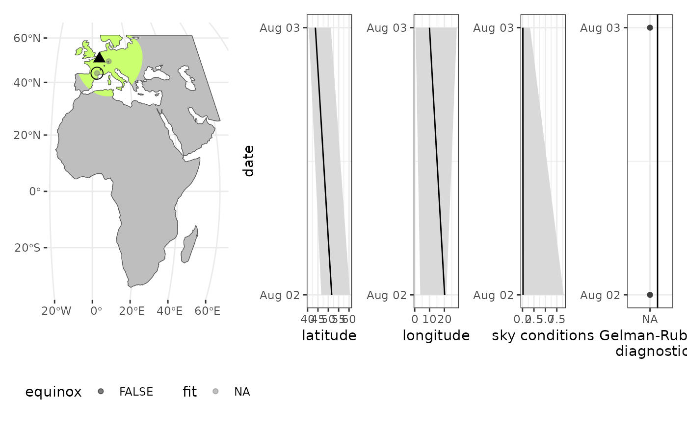
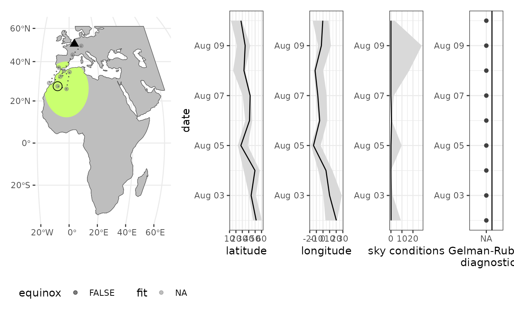
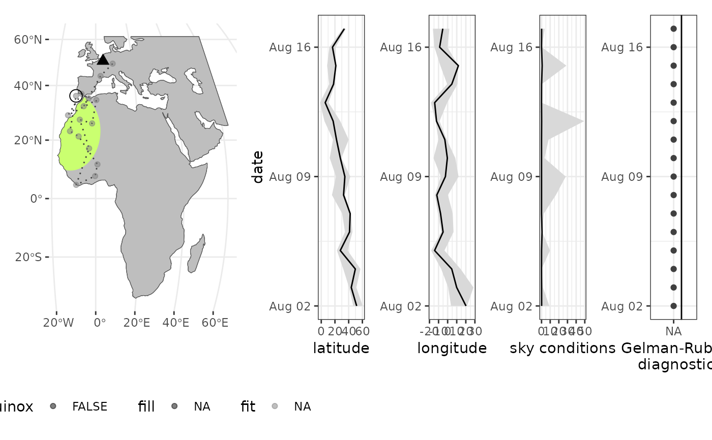
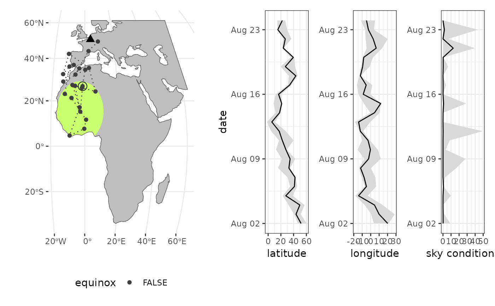
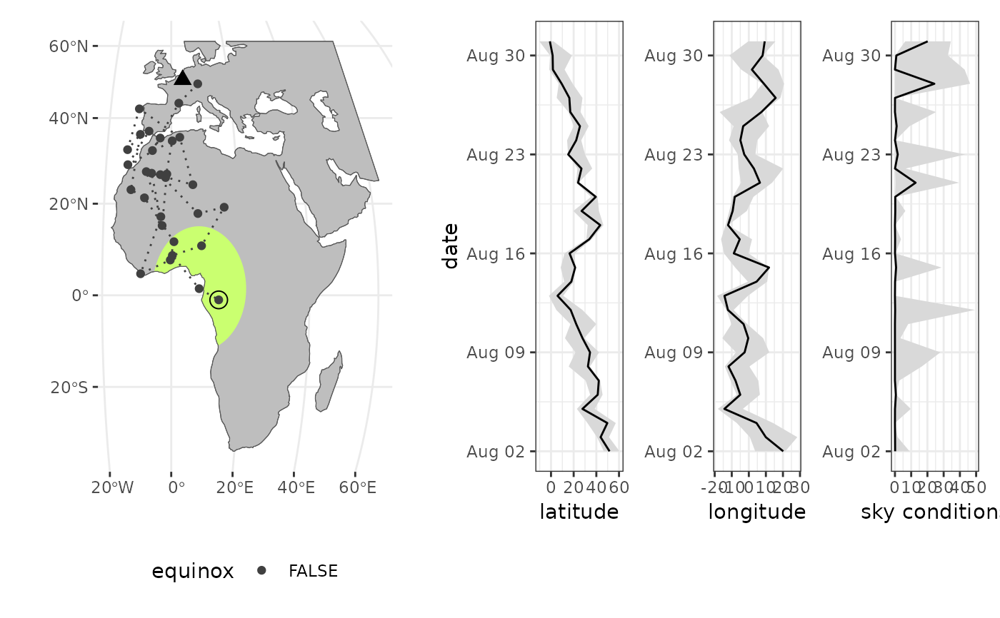

Skytrack compares geolocator based light measurements in lux with those modelled by the sky illuminance model of Janiczek and DeYoung (1987).
skytrackr(
data,
start_location,
tolerance = 1500,
range = c(0.09, 148),
scale = log(c(1e-05, 50)),
control = list(sampler = "DEzs", settings = list(burnin = 1000, iterations = 3000,
message = FALSE)),
window_size = 1,
mask,
step_selection,
smooth = TRUE,
clip = NULL,
plot = TRUE,
verbose = TRUE,
debug = FALSE
)Arguments
- data
A skytrackr data frame.
- start_location
A start location of logging as a vector of latitude and longitude
- tolerance
Tolerance distance on the search window for optimization, given in km (left/right, top/bottom). Sets a hard limit on the search window regardless of the step selection function used.
- range
Range of values to consider during processing, should be provided in lux c(min, max) or the equivalent if non-calibrated.
- scale
Scale / sky condition factor, by default covering the skylight() range of 1-10 (from clear sky to extensive cloud coverage) but can be extended for more flexibility to account for coverage by plumage, note that in case of non-physical accurate lux measurements values can have a range starting at 0.0001 (a multiplier instead of a divider). Values need to be provided on a log scale (default = log(c(0.00001, 50)))
- control
Control settings for the Bayesian optimization, generally should not be altered (defaults to a Monte Carlo method). For detailed information I refer to the BayesianTools package documentation.
- window_size
use a moving window across x days during data processing, this effectively smooths responses (default = 1, day-by-day processing)
- mask
Mask to constrain positions to land
- step_selection
A step selection function on the distance of a proposed move, step selection is specified on distance (in km) basis.
- smooth
smooth the data before processing (default = TRUE)
- clip
value over which lux values are clipped, to be set to the saturation value of your system when using the full diurnal profile (not only twilight) (default = NULL)
- plot
Plot a map during location estimation (updated every seven days)
- verbose
Give feedback including a progress bar (TRUE or FALSE, default = TRUE)
- debug
debugging info and plots
Value
A data frame with location estimate, their uncertainties, and ancillary model parameters useful in quality control.
Details
Model fits are applied by default to values up to sunrise or after sunset only as most critical to the model fit (capturing daylength, i.e. latitude and the location of the diurnal pattern - longitudinal displacement).
Examples
# \donttest{
# define land mask with a bounding box
# and an off-shore buffer (in km), in addition
# you can specify the resolution of the resulting raster
mask <- stk_mask(
bbox = c(-20, -40, 60, 60), #xmin, ymin, xmax, ymax
buffer = 150, # in km
resolution = 0.5 # map grid in degrees
)
#> Spherical geometry (s2) switched off
# define a step selection distribution/function
ssf <- function(x, shape = 0.9, scale = 100, tolerance = 1500){
norm <- sum(stats::dgamma(1:tolerance, shape = shape, scale = scale))
prob <- stats::dgamma(x, shape = shape, scale = scale) / norm
}
# estimate locations
locations <- cc876 |> skytrackr(
plot = TRUE,
mask = mask,
step_selection = ssf,
start_location = c(50, 4),
control = list(
sampler = 'DEzs',
settings = list(
iterations = 10, # change iterations
message = FALSE
)
)
)
#>
#> ══ Estimating locations ══════════════════════════════════════ skytrackr v1.1 ══
#>
#> ℹ Processing logger: CC876!
#> → Smoothing the data using a Hampel filter
#> [outliers will be replaced with interpolated values]
#> ℹ (preview plot will update every 7 days)
#> - Estimating positions ■■ 3% | ETA: 45s

#> - Estimating positions ■■■■■■ 17% | ETA: 18s


#> - Estimating positions ■■■■■■■■■■■■■■■■■■ 57% | ETA: 6s

#> - Estimating positions ■■■■■■■■■■■■■■■■■■■■■■■■■■■■ 90% | ETA: 1s
#> - Estimating positions ■■■■■■■■■■■■■■■■■■■■■■■■■■■■■■■ 100% | ETA: 0s

#> ℹ Data processing done ...
# }